Management Interface Page: Web Endpoints
Description
This page lists all registered web endpoints (usually REST API) that are deployed in the system. You can test them live and even create new endpoints directly within this web interface.
You can use the search bar on the top left of the page to quickly find the endpoint you want.
Just remember that not all endpoints are meant to be used as-is and may require more complex logic to produce meaningful results.
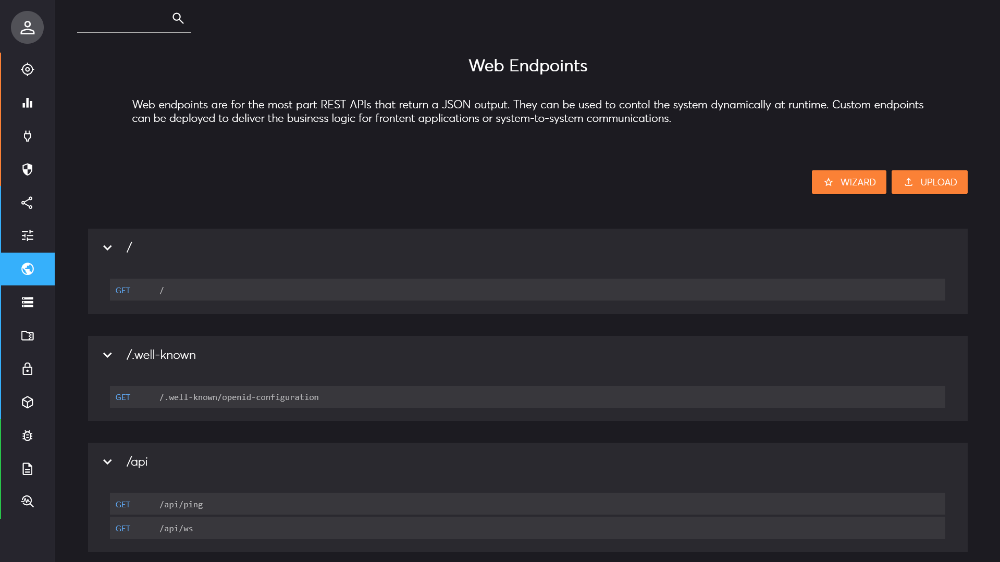
In the list, you can quickly identify the HTTP operation that is linked to an endpoint: GET, POST, PUT, or
DELETE. However, the system supports any other method, even custom ones.
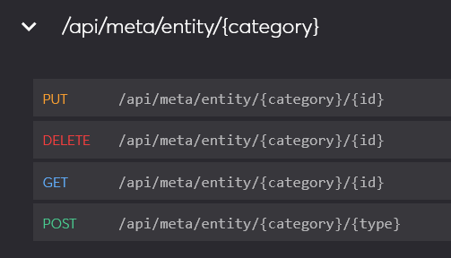
When you click on an endpoint, it expands and provides more detail.
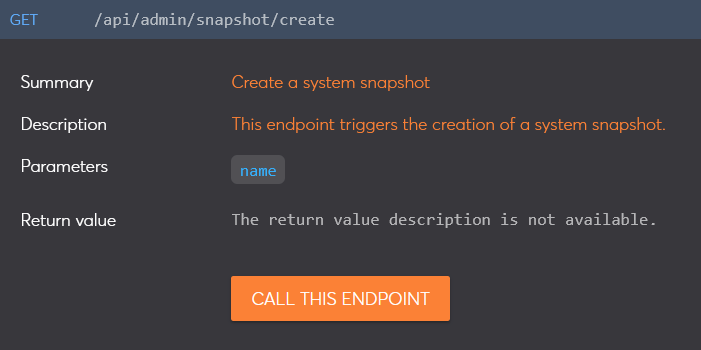
Most endpoints are built-in so the only option is to call them, but others are custom and you can edit pr remove them too.
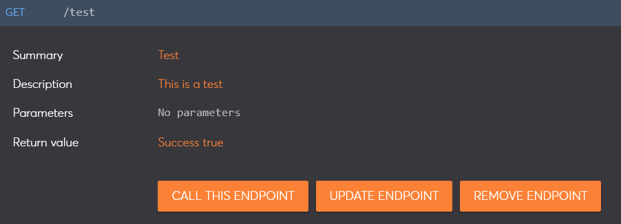
When you click on a parameter (blue tag), the complete description is displayed.
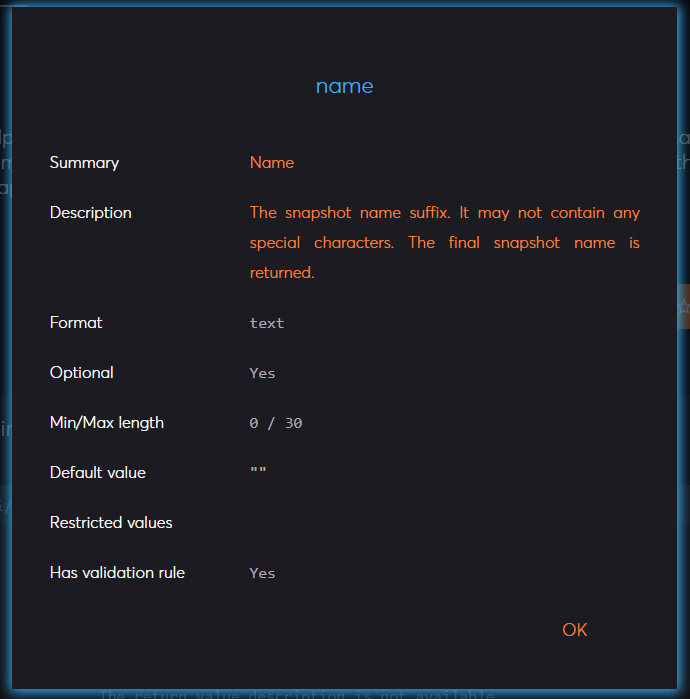
Call an Endpoint
When you expand an endpoint, you can click on the "Call this Endpoint" button. This will open the prompt for the parameters.
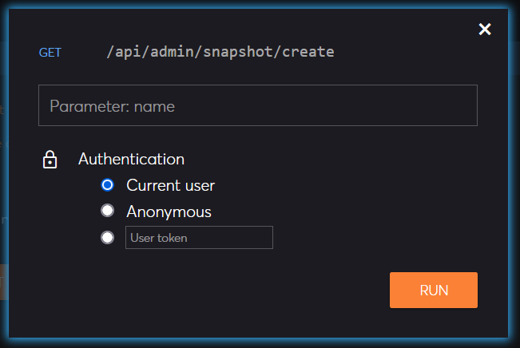
All possible parameter of the endpoint will be listed, and you can also choose the desired authentication method.
The result is displayed as text (usually JSON) or downloaded directly if it cannot be displayed. The result window shows the response code (200 means success), the total time to call the endpoint including the network connection, and the server-side processing time.
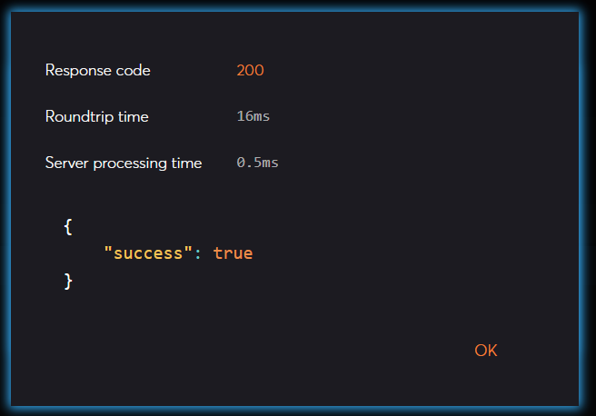
Custom Endpoints
You can create custom endpoints dynamically from the web interface using the buttons on the top right of the page. If you create custom endpoints, do not forget to create a snapshot to persist your changes.
You can upload an existing file with the endpoint definition by clicking on the upload button. Otherwise, the wizard button will prompt you for the basic information.
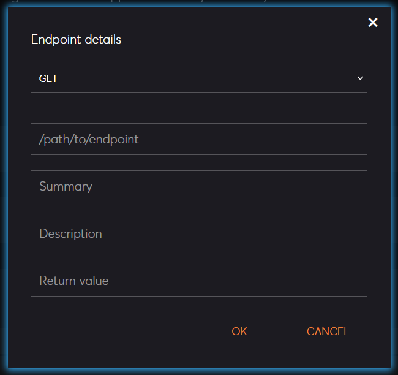
You must choose the HTTP method, the path to your endpoint, and ideally document what it does. The next screen shows the editable code template of your endpoint. You can modify it to your liking and press the deploy button. The endpoint should be available within seconds.
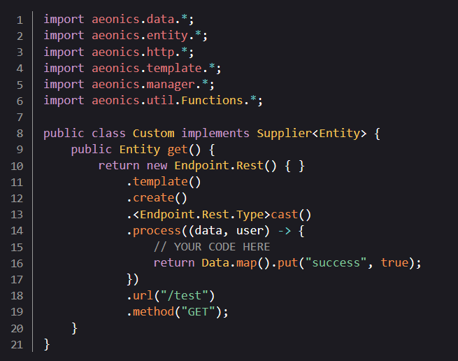
You may not get it right the first time. If a compilation error happens, it will be displayed with the line number.
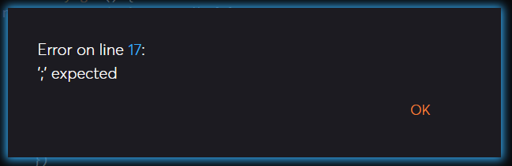
Custom endpoints can be called like other endpoints. You can also update the code and redeploy it, or remove it entirely. In that case, a confirmation is required.
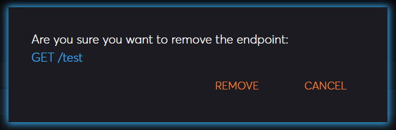